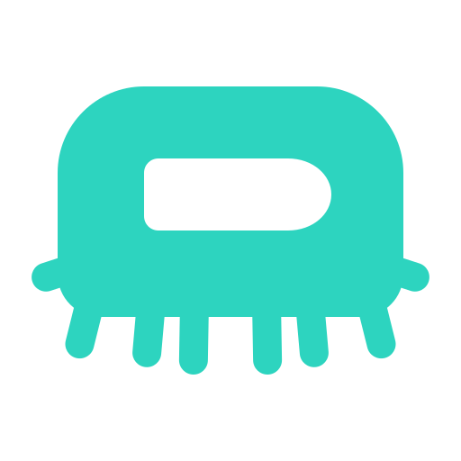
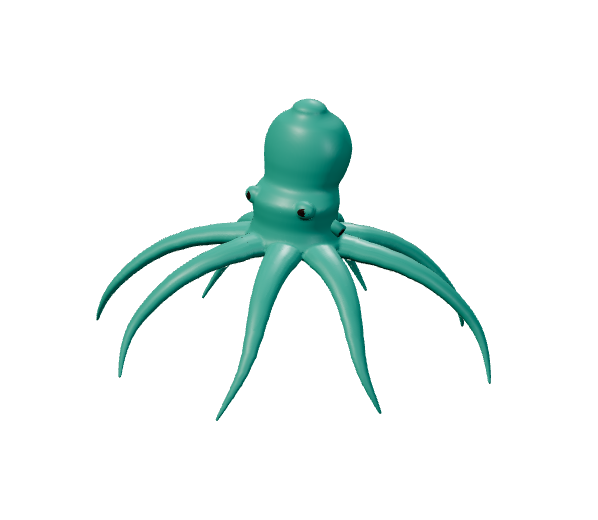

Keep what catches you.
Select a region, a window, or a whole screen. Stitch a scrolling view when one frame isn't enough.

OctadockCatch a detail. Make a point. Keep it close.
A quieter home for everything you capture.
Windows 10 / 11 · No account needed · Free & open source


Just the image.
Just the tools you need.
Try the dock. Pick a mode, then capture a little of this scene.
From the thing you noticed to the thing you need to share. Keep the useful parts close.
Select a region, a window, or a whole screen. Stitch a scrolling view when one frame isn't enough.
Mark the detail. Pull text from an image. Keep recent captures nearby and find the one you need.
Gather captures, notes, and files into a local bundle. Review it, copy it, or save it wherever you work.
Your captures, history, and tools live on your PC. No subscriptions, telemetry, or cloud processing. Optional dictation uses a voice model you import yourself.